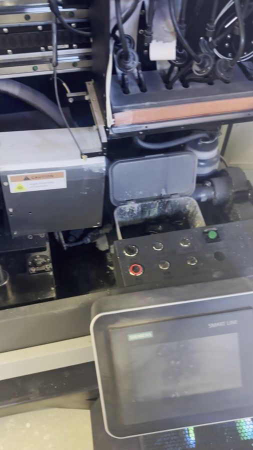
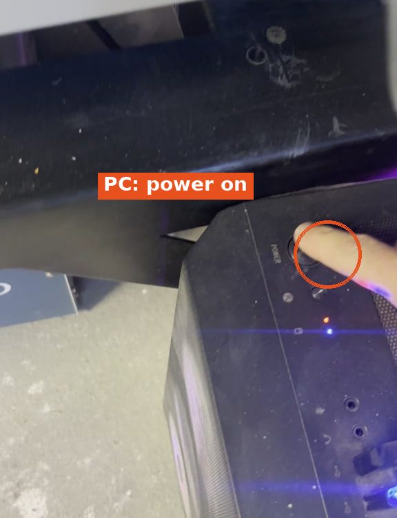
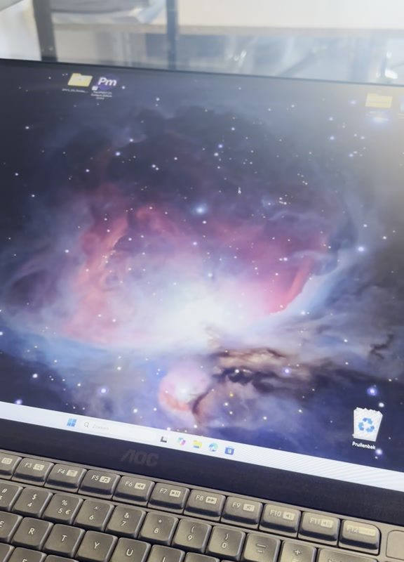
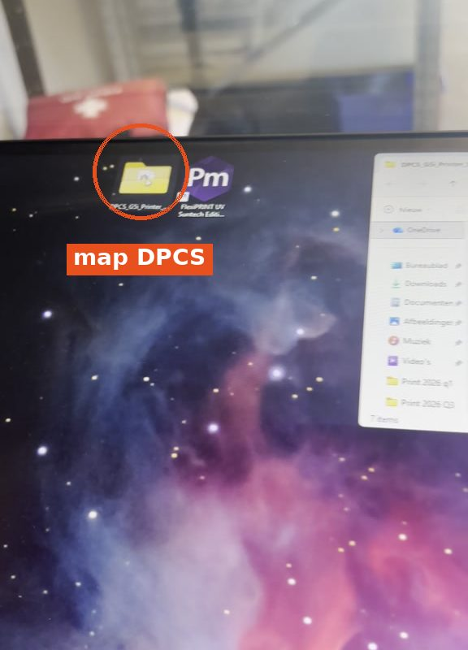
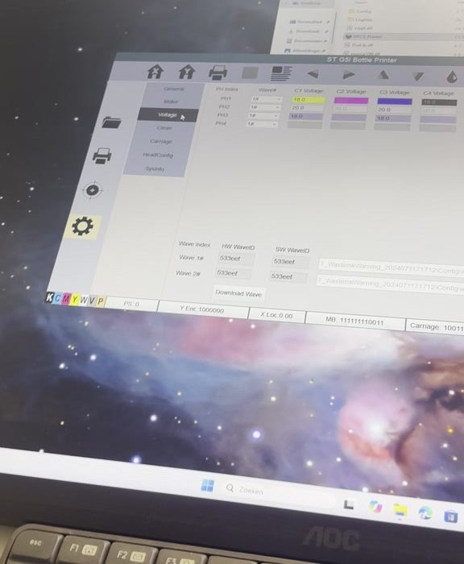
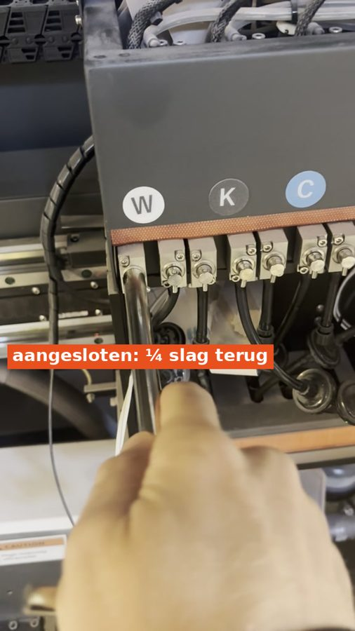
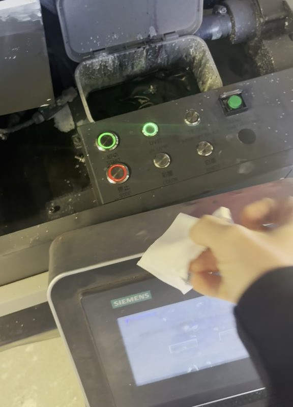
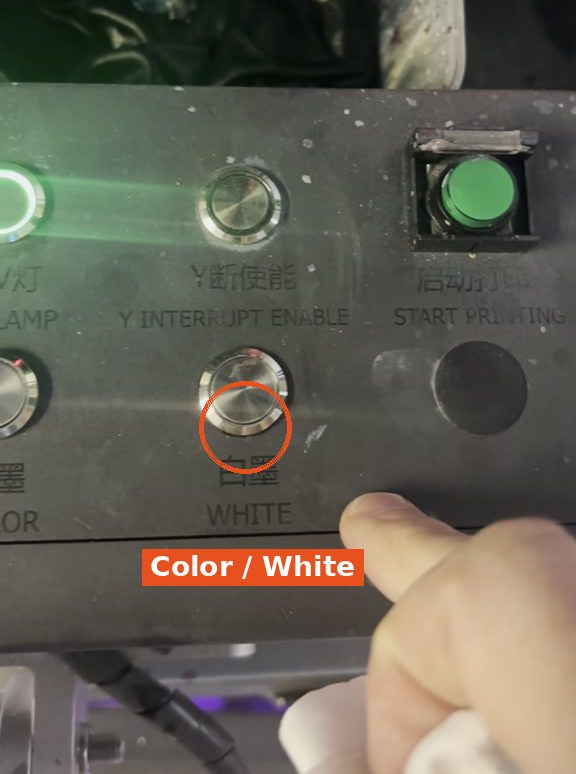
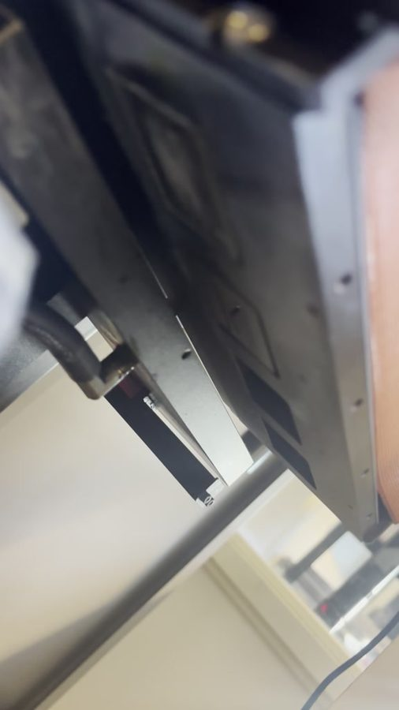

1
Machine aanzetten
- Druk op START op de machine.
- Het groene lampje gaat branden.

Zo zet je de mokprinter (Mug 1) aan en maak je hem klaar om te printen. Hij werkt net iets anders dan de flessenprinter.
Nodig: non-dust cloth (pluisvrij doekje) · PC-code: 1997










✓ Klaar om te printen.